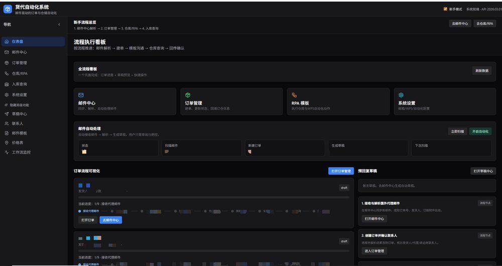

想象这样一个场景：清晨，业务员打开系统，昨晚收到的几十封国外邮件已经被 AI 阅读完毕。 订单号、发货人、货物信息…全部提取整齐，自动填入数据库；需要回复的邮件，AI 已草拟好回复内容，等待一键确认； 仓库系统的建单操作，RPA 机器人在后台默默完成。所有这一切，没有一条数据流出公司网络。

Vue 3 + TypeScript + 组件库，流畅的用户体验
FastAPI + Python 异步服务，业务逻辑与 AI 调度
本地 LLM 推理 + 数据持久化 + 外部系统集成
AI 理解邮件内容，自动提取订单号、发货人、订舱附件等关键信息，将原本需要人工阅读和录入的工作交给系统完成
支持多种格式单证，自动提取 20+ 字段，包括发货人、收货人、货物描述、数量、重量等，准确率远超传统 OCR 方案
网页操作录制后自动执行，WPS 在线表格数据同步，仓库系统自动建单，将重复性操作全部自动化
根据业务场景自动草拟回复内容，包括确认函、通知函等，用户只需审阅与把控，大幅提升回复效率
表格、邮件、网站无缝集成，数据在各系统间自动流转，无需人工重复录入
从邮件接收到任务完成，全流程自动化，无需人工干预
Outlook 自动监听新邮件，AI 识别邮件类型和优先级
本地 LLM 智能解析，提取订单、货物、联系人等关键字段
自动填充数据库，智能校验数据完整性和一致性
机器人自动执行仓库系统建单、表格更新等操作
任务完成推送通知，生成执行报告，等待确认
屏蔽底层模型差异，支持灵活切换推理引擎，无需修改业务代码
向外部系统写入前，智能检测用户活动，避免冲突，确保操作安全
AI 生成进度、RPA 执行状态，实时推送到前端，用户随时掌握进度
无需复杂安装，一键启动脚本自动初始化所有服务，支持离线环境运行